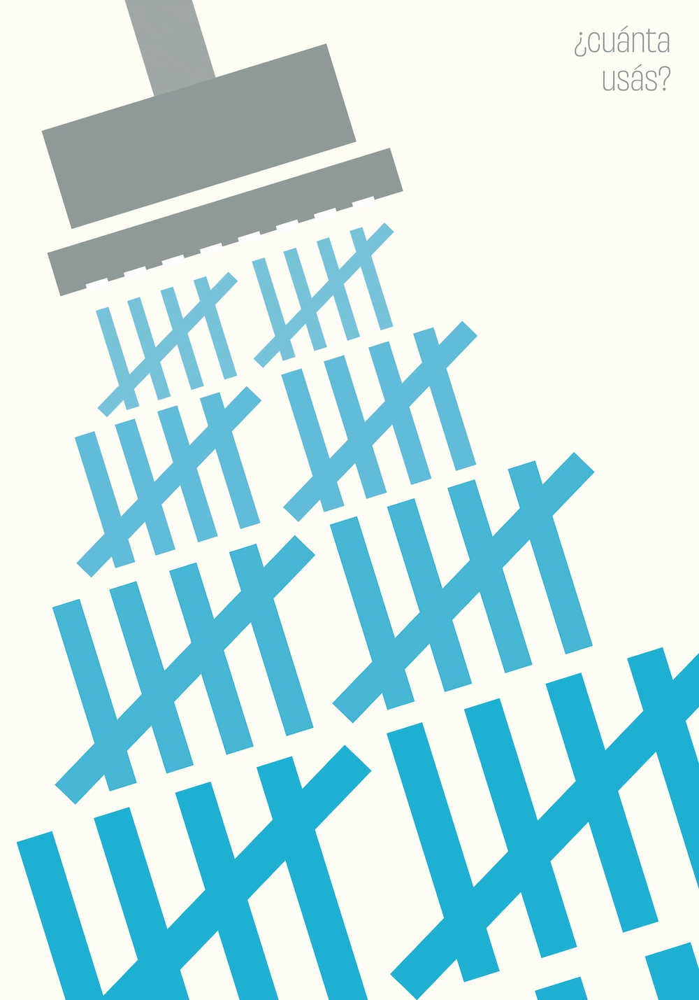
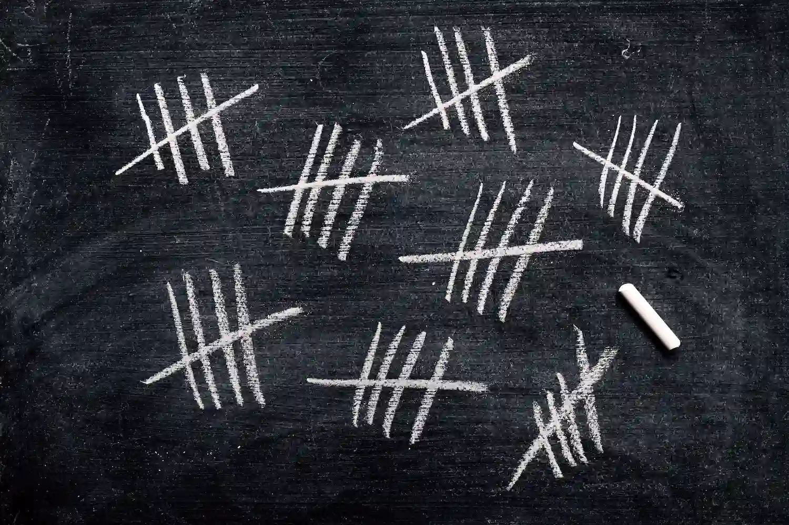
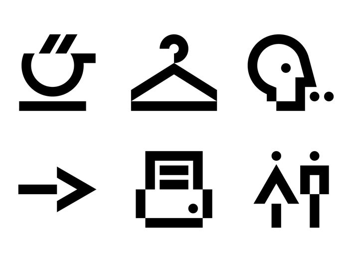
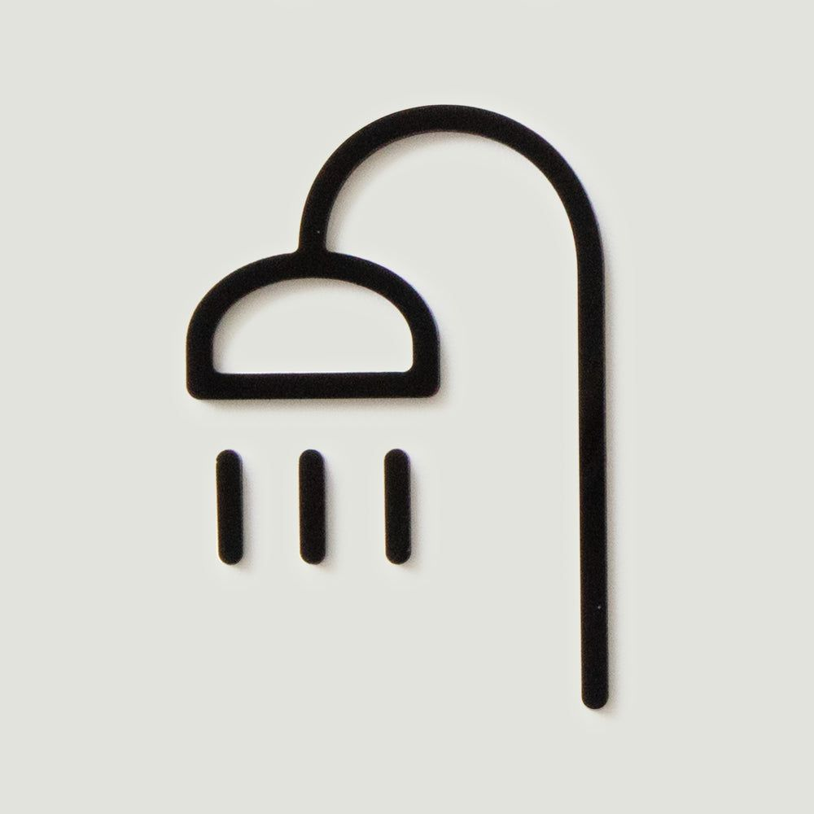
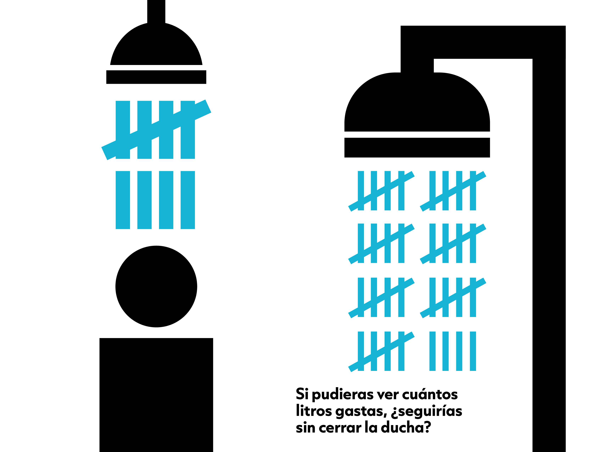
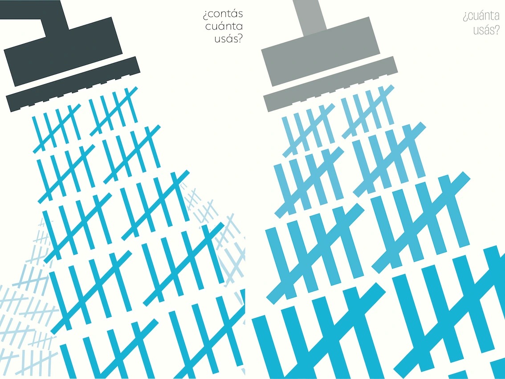
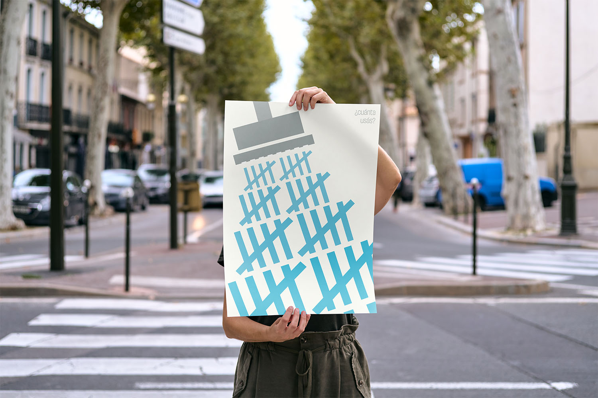
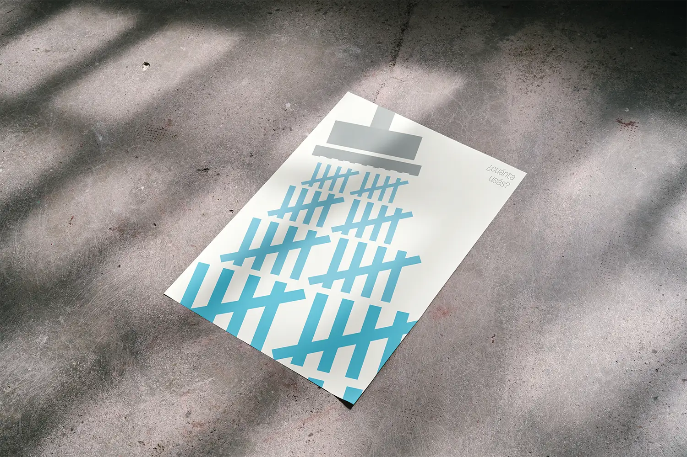

La cuenta de la ducha
Finalista TISDC 2026Cartel con temática de restauración del planeta, participante en la 19na Bienal del Cartel de México y finalista de la categoría Visual Design en Taiwan International Student Design Competition 2026.
- Cartelismo
- Conceptualización
- Comunicación Visual

01 El reto
El proyecto surgió a partir de la convocatoria de la Bienal Internacional del Cartel en México, que invitaba a comunicar acciones cotidianas capaces de promover hábitos y formas de vida sostenibles. El reto era transformar una situación cotidiana en un mensaje visual claro que generara reflexión y cambio de actitud.
02 El concepto
El cartel utiliza una metáfora visual en la que las marcas de conteo representan el agua utilizada durante una ducha. El proyecto busca generar conciencia sobre el consumo de agua en una acción cotidiana que suele pasar desapercibida, haciendo visible aquello que normalmente no contabilizamos.
03 Investigación y moodboard
Investigué datos sobre el consumo de agua durante las duchas para determinar la magnitud que debía comunicar mediante las marcas de conteo. A partir de ello, exploré un lenguaje visual geométrico que aportara fuerza y peso al mensaje, además de diferentes formas de representar gráficamente una ducha para maximizar su legibilidad.



04 Proceso y diseño
Durante el proceso exploré distintas formas de hacer que el lenguaje gráfico tuviera mayor presencia y que el mensaje adquiriera cada vez más peso visual. Fui simplificando y reforzando los elementos hasta encontrar una composición donde la metáfora y el mensaje fueran los protagonistas.


05 Resultado


06 Lo que aprendí
Aprendí a confiar más en el lenguaje gráfico para transmitir mensajes sin depender del texto y a distinguir mejor cuándo es necesario replantear la ejecución y cuándo el concepto sigue siendo sólido. A lo largo del proceso exploré distintas versiones sin perder de vista la idea central. Si pudiera desarrollar nuevamente el proyecto, trabajaría en hacer la representación de la ducha aún más legible. También valoro especialmente el reconocimiento internacional que recibió el cartel al ser seleccionado como finalista en el TISDC 2026.